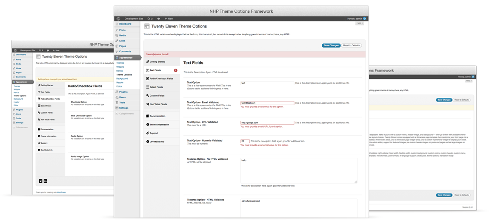

NHP Theme Options Framework
Overview
Features
Extend
Wiki
Download

Simple, easy to use, very extendable Options framework for WP themes.
View project on GitHub
Download Framework
(v1.0.0)
Download with docs
Submit issues
Roadmap, changelog, and WIKI
Tweet